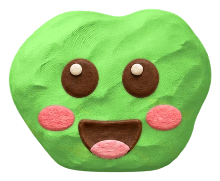
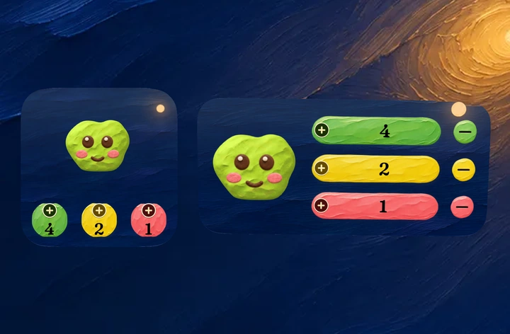
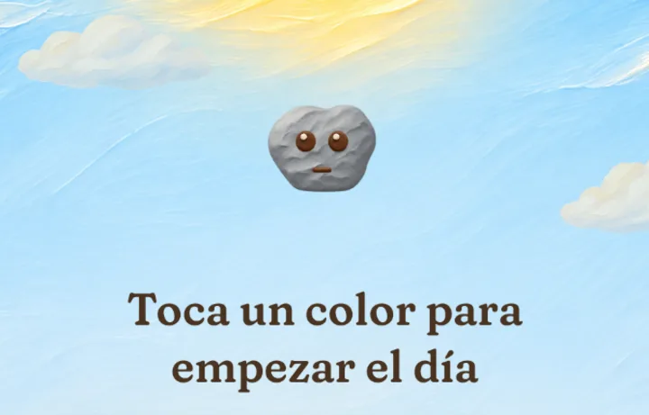
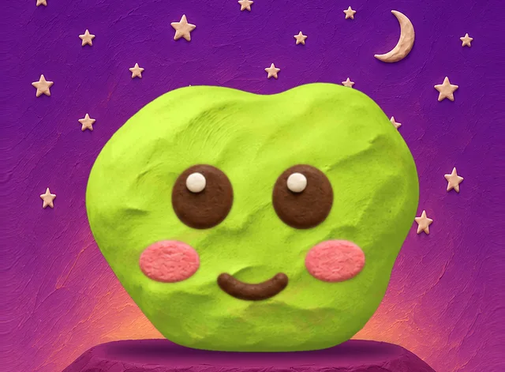

Un diario de comidas. Sin contar calorías.
Verde, amarillo o rojo. Tú decides qué significa cada uno.


Un toque desde tu pantalla de inicio.
Registra sin abrir la app. De día o de noche.


Su cara sigue tu día.
Radiante, tranquila o simplemente neutra. Nunca pone mala cara.

Cada mañana empieza en pequeño.
Sin rachas que perder. Un día sin registrar no rompe nada.
¿Por qué tan simple?
97 %
de los días
con una lista corta
49 %
de los días
anotando cada alimento
Estudio piloto pequeño. Probó el método, no Green Blob.
Sin cuenta. Sin anuncios. Sin nube.
Tu diario se queda en tu dispositivo.

¿Un diario de comidas es para ti?
Llevar un diario de comidas no es para todo el mundo. Si registrar hace que comer te resulte más estresante, está bien dejarlo. Hablar con alguien de confianza, o con un profesional, puede ayudar.